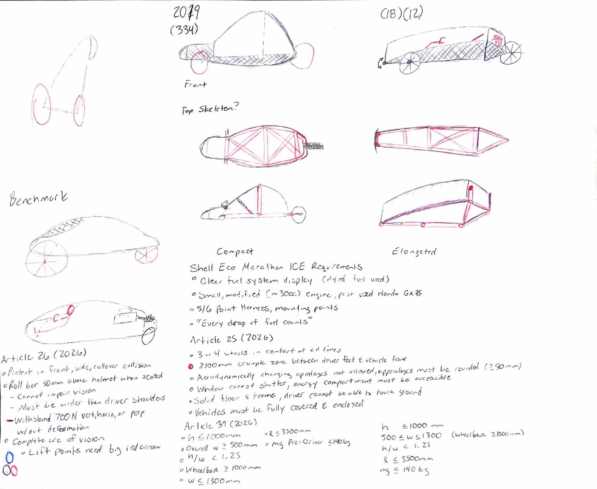
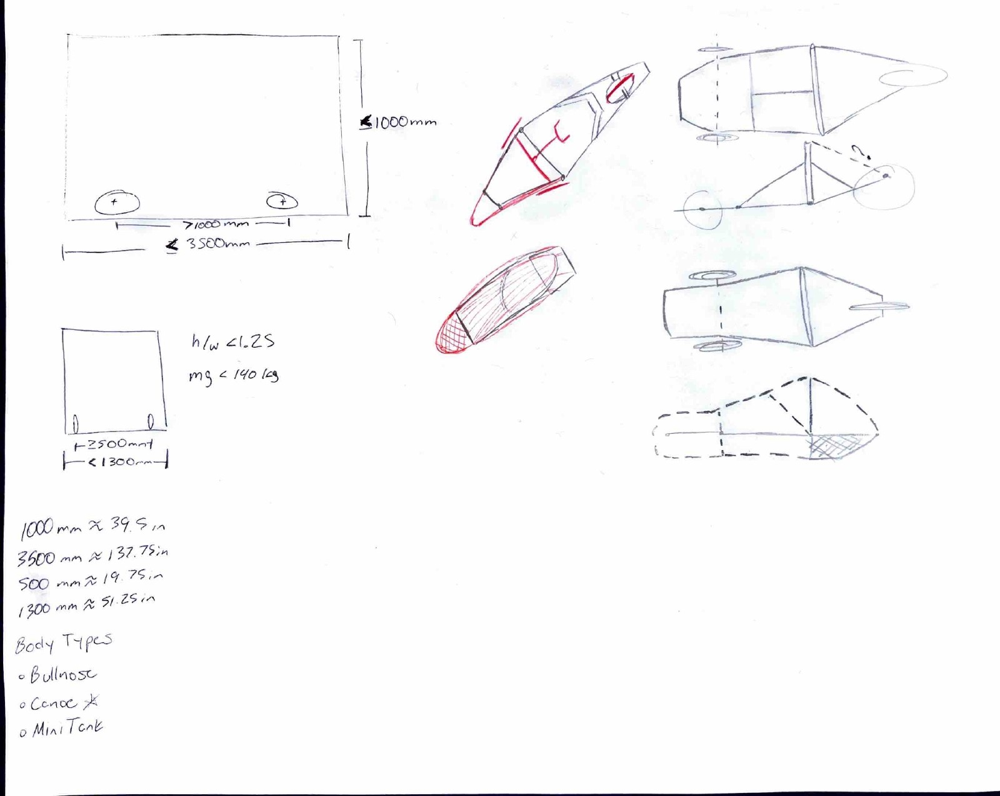
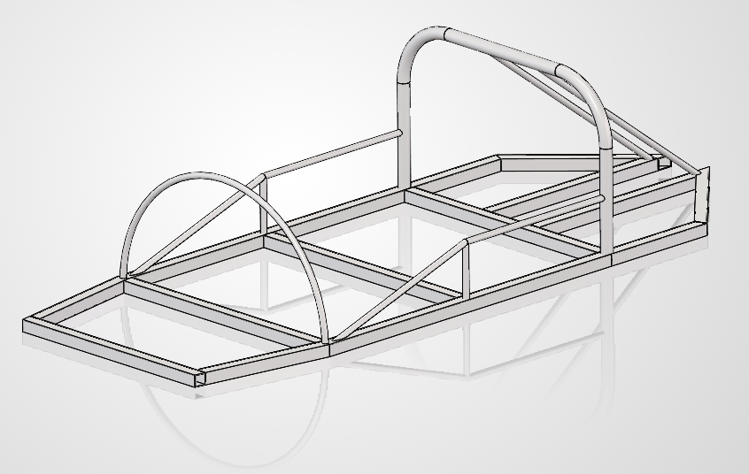
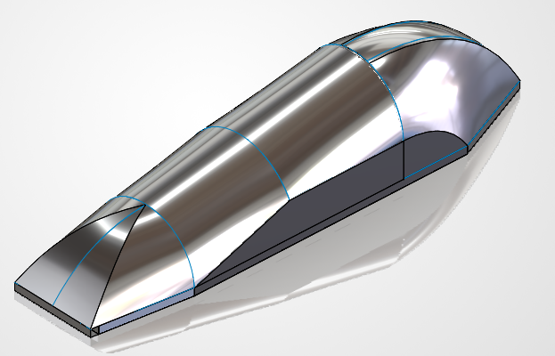
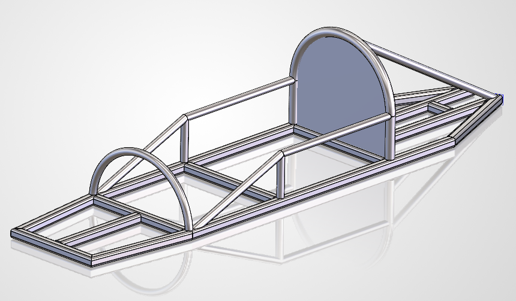
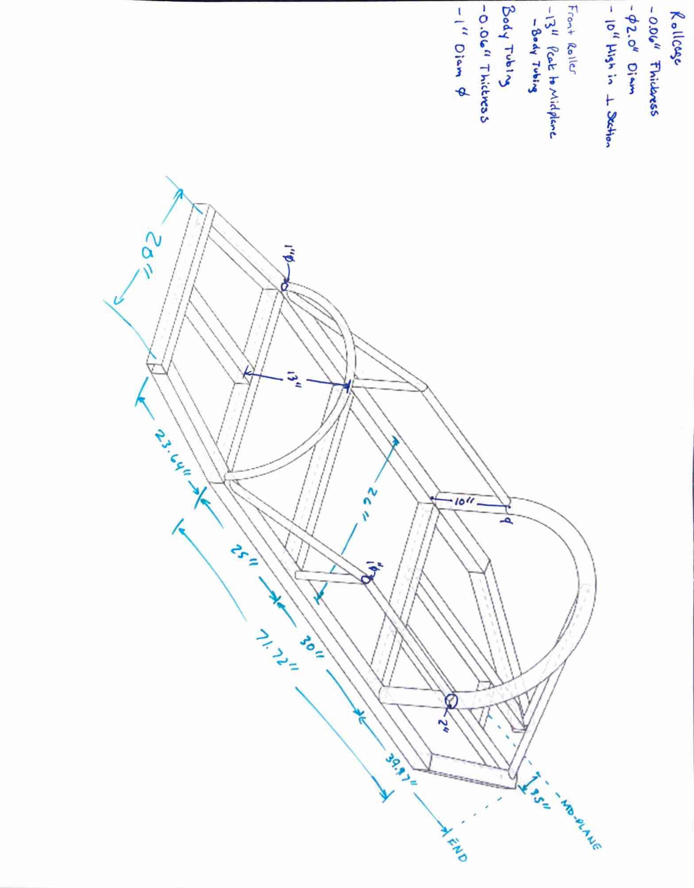
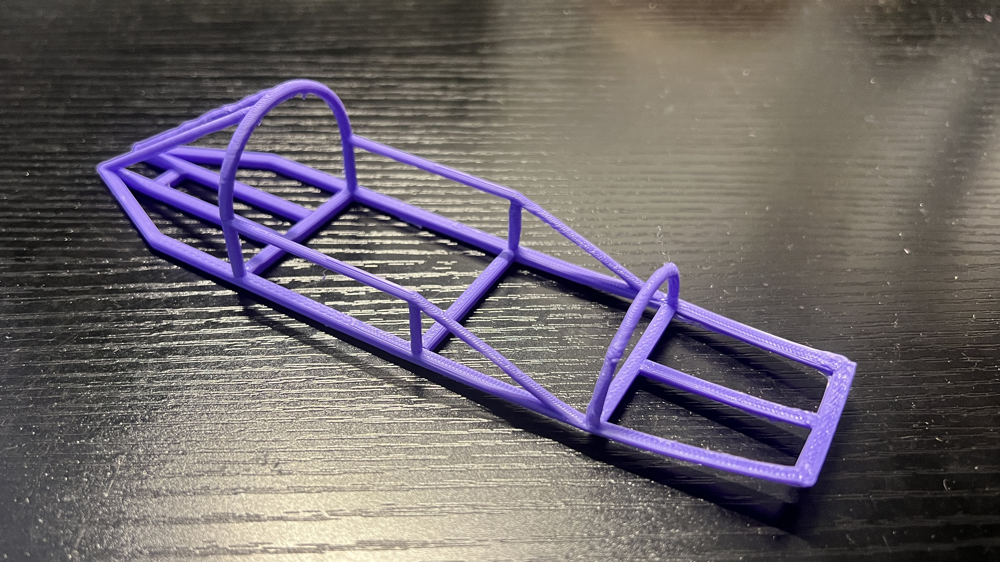

Junior Frame Lead · Structural Design · SolidWorks Weldments · FEA Preparation
I was appointed Frame Lead for the JMU Junior Team based on prior structural analysis and FEA work. The role covers chassis layout decisions, structural validation, and making sure the frame plays nicely with suspension, powertrain, and the body shell. On the technical side that means material selection, section sizing, and setting up analysis procedures that future teams can actually follow.
CAD: SolidWorks (Weldments, Drawings) · Simulation: Altair (SEM-provided), ANSYS Mechanical · CFD: Siemens suite (SEM-provided) · Fabrication reference: 3D printing (PLA, scale model)
All tubing is aluminum across three member types. Sections were chosen around structural need, weldability, and keeping weight down.
| Member Type | Section | Material | Application |
|---|---|---|---|
| Main body / primary structure | 2 in square tube | Aluminum | Floor rails, longitudinal members, primary load paths |
| Main rollbar | 2 in diameter pipe | Aluminum | Primary overhead protection structure |
| Side supports & frontal sub-rollbar | 1 in diameter pipe | Aluminum | Secondary bracing, bent support members |
Before touching CAD, I sketched out packaging and structural layout ideas by hand. The goal was to work through load path intent, driver positioning, and rough proportions before locking anything into SolidWorks.


The Model 5 chassis from a prior year is the main structural and packaging reference. It's noticeably shorter and stubbier with a rounder, kayak-like cross section. This year's frame is a pretty significant departure: longer wheelbase, more angular primary structure, and updated rollbar geometry to match current SEM regulations.

Model 5 reference frame. Shorter, stubbier, and rounder than the current design. Kept as a packaging and geometry benchmark.The senior team provided a temporary aluminum shell mated to the chassis for CFD and FEA groundwork. It represents the vehicle's aerodynamic outer envelope and is useful for early drag estimation and getting structural load inputs defined.
After team review, we decided to move FEA and CFD work into the SEM-provided Altair and Siemens suite rather than ANSYS. It lines up better with official competition toolchain support and is what other teams are using, so comparisons are cleaner. The shell geometry is still a good reference asset for both.

Chassis with the senior team's temporary aluminum shell. Used for initial CFD and FEA geometry. Team has since moved to the SEM-provided Altair and Siemens toolchain.The main deliverable so far is a fully cleaned SolidWorks weldment with aluminum material applied, a bulkhead added, and geometry ready for structured load case analysis per SEM structural codes. This is the input model for Altair FEA once we get the toolchain set up.
Getting here meant fixing a lot of inherited problems from the senior team's file: corrupted and disconnected weldment features, structural member profiles that needed redefining, and joint continuity issues throughout the assembly.

Cleaned SolidWorks weldment with aluminum material applied and bulkhead integrated. Geometry is validated and ready for Altair FEA load case analysis per SEM structural standards.I pulled a contour outline view from SolidWorks and manually added dimensions from the senior team's cutlist and weldment data. Their original drawing had cluttered, corrupted, and disconnected dimensions throughout, so this is a clean redraw that's actually usable for fabrication and structural review.

Outline drawing with dimensions pulled from the senior team cutlist and weldment data. Redrawn from scratch after the original file had corrupted dimensions throughout.I printed a small scale PLA version of the polished frame for team demos and advisor communication. Obviously you can't draw real conclusions about the aluminum weldment from a plastic print, but it's useful for getting a feel for the geometry, checking proportions, and doing a quick manual twist to see how the structure behaves under torsion. It's also just a lot easier to hand someone a physical model than pull up SolidWorks every time someone wants to see the frame.

Scale PLA print of the SolidWorks frame. Useful for geometry demos and a quick manual twist test. Not a structural stand-in for the aluminum weldment, but good enough to get the point across.Once Altair is set up, these are the load cases I'm planning to run first: